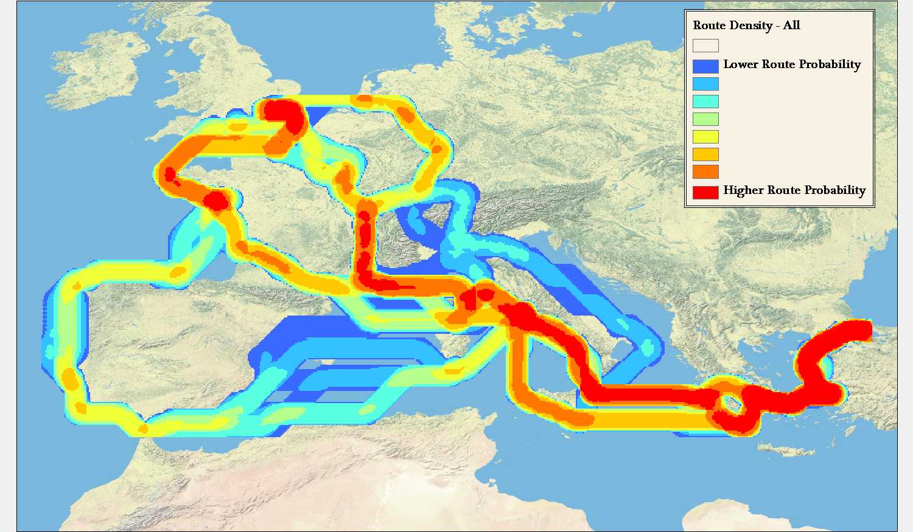
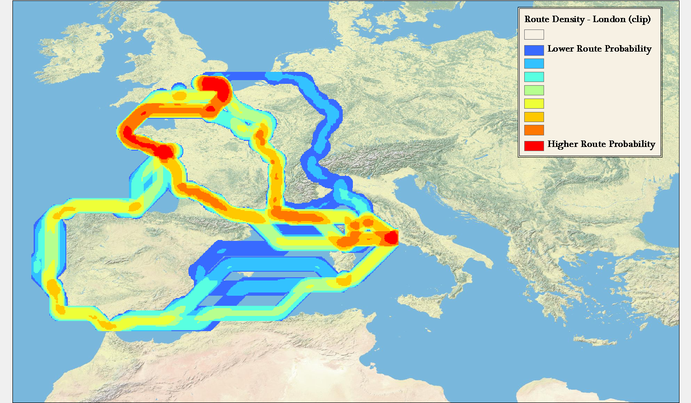

Doing digital humanities often means producing digital geographic maps*. These maps increasingly provide a wide range of spatial objects to represent and as a result tend to present a mix of traditional cartographic principles: Simple pushpins or polygons indicating locations relevant to objects in a collection; chloropleth maps symbolizing geographic variation in a social or environmental variable; constructed raster surfaces depicting spatial analytic results or conceptual regions; lines and shapes indicating the magnitude, direction and duration of flows of social interaction; and network maps presenting plausible models of ancient transport.
While digital humanities research engages with (and thus adopts methods from) established technical professions, we cannot simply adopt their methods whole cloth, but instead normally adapt them to unintended purposes. Among the areas we draw from are computer science (topic modeling, text mining, natural language processing and data modeling), library and information science (collection annotation and metadata, information visualization), and geographic fields including cartography and geographic information science (mapping and spatial analysis). Obviously we should be respectful of and receptive to established practices—they are established for good cause—but we also bring particular requirements to the table and require cooperative engagement to extend digital tools to better suit humanities scholarship. More than that, though, the digital humanities has matured at a point when digital mapping techniques have multiplied in both power and application such that new techniques for representing geospatial data need to be developed.
There is conceptual and practical overlap with the other domains mentioned above besides cartography. It is precisely this overlap, and the growing trend in data visualization to see geospatial data as simply one more flavor of data to be displayed, rather than a distinct class, that provides the basis for understanding how digital humanities formalizes what has been referred to as “Spatial Humanities” or “the spatial turn” and what that might mean for data visualization more generically.
In contrast with data visualization of text analysis or network analysis, the modern representation of geographic information has centuries of practice to draw from, and even the most novel techniques for the representation of abstract geographic knowledge, such as cartograms, can often lay claim to being developed many decades ago. This deep store of aesthetic techniques and information principles, as well as practical requirements for the presentation of complex analysis growing out of the proliferation of GIS, is in sharp contrast with modern tools and techniques that utilize the map not as a fashioned piece of cartographic knowledge but one of many windows into a digital object such as a computational model or archive. The traditional map, whether individually or in an atlas, is a hand-crafted, long-belabored object, quite unlike the suddenly created and suddenly discarded geospatial visualization.
But it is just this move away from the map and toward the geospatial visualization that I think needs to be embraced. As digital research of historical systems becomes more commonplace, the ability to visually represent those systems becomes more critical. ORBIS provides a useful example of a computational model being used to express historical conditions due not only to its relative simplicity and scope but also because of its broad popularity, which has resulted in significant feedback in regard to the visual display of information. While the ORBIS site provides a detailed explanation of the scope and capabilities of the model, analytics and feedback have shown that key facets of the model need to move out of the text accompanying the data visualizations and into the dynamic representations themselves. This is a problem that can derive benefit from traditional cartographic techniques, but is fundamentally focused not on the crafting of one map, but rather creating an interface into a system that at its core has a strong geospatial character.
There are two categories of information that particularly need to be foregrounded, and which I will focus on here. Both of these have to do with a more general issue of modeling probability space in geographic space. First, the user needs to know that the route they selected is one within a multitude that exists between sites that vary based on time of year, priority, direction, and mode of travel. Such a route, distinct from the single best route discovered on our phone using Google Maps (the method which has done so much to improve transportation network literacy), provides a complexification of our understanding of travel, but at the cost of requiring careful language and cartography to represent.
The second is that there is no embedded understanding of how certain or likely travel along a particular route really was. While a pointed reminder that a transportation network model is a simulation suffices at a preliminary level, there needs to be some development of a visual rhetoric of probability in systems such as these where engagement with probability and possibility is most readily available. A computational network model is particularly well-suited to present not the annotated probability or historicity of a result (which can be presented anywhere) but a calculated probability within the logic of the system, which if the model is worthwhile should correlate with historic patterns.
Evidence for the misunderstanding of the multitude of paths exists in great quantity, as routes (with their duration and cost) have been quoted on many blogs, forums, and in Twitter, among other communication mediums on the web. Very often, the description follows the pattern of “X to Y in Z days”. While this may sound like a sufficient explanation, it leaves out critical variables that significantly alter the value of Z. A fully described route in ORBIS would very much (by necessity) resemble the programming code used to run the query from which that route was created, and would sound something like:
X to Y in Z days, during A month, with B priority for the choice of route, using C speed variables (represented as the Sea Model, River transport, and vehicle choices) with C restrictions on mode of travel, costing A1 denarii to ship goods on this route when using a wagon along the land portions, A2 denarii to ship goods on this route when using a donkey along the land portions, A3 denarii to ship passengers on this route.
This may sound familiar, as it was used as the logic that returns the natural language result to the user along with the polyline representing the geometry of the route. But this small block of text, along with the variety of options presented on the right, which are all signals of the aforementioned complexity, do not do enough to highlight the contingent nature of travel, nor do they do a proper job of expressing the uncertainty of such results.
Uncertainty in ORBIS was set aside when it was developed because the focus was on historical probability of routes being taken, which is a pernicious issue. However, the development of likelihood of a route being taken can be achieved by using the ORBIS model itself. In this way, representing the probability space allows us to also inform the user how far outside the norm a trip was between two sites. It also affords us the opportunity to explore the idea of whether certain corridors were more or less stable or constrained.
There are two goals: First, to represent the probability space with limited variables provided, such as the routes between two points where priority, direction, and time of year are unknown. Second, provide some understanding of the modeled likelihood of a particular route, leaving historical likelihood aside for now, and noting how outside the norm a route is based on its statistical similarity to other routes between such points. Both of these are accomplished by generating set of routes between two points. I’ve focused on the routes between London and Rome, as well as the routes between Rome and Constantinople. These two pairs of source and target provide distinct spatial patterns in their probability that provide a good illustration as to why it is important to express probability and possibility visually.
For this example, a rather simplified set of 48 possible routes between pairs has been generated. These routes consist of the path in both directions (from Rome to Constantinople, from Constantinople to Rome, and the same for London) according to two priorities (Fastest by foot and Cheapest by wagon) during each of the 12 months. Aggregated, these routes can be displayed by simply showing the line density of the 48 routes:

This simple aggregation of all paths shows the raw likelihood that the travel between these points would result in a traveler having been in a particular area. This reveals that the probability space between two points can vary widely. For instance, the aggregated route density between Rome and Constantinople, regardless of priority, direction, or time of year falls within a tightly constrained corridor. In comparison, travel between London and Rome is so affected by these variables that there are widely divergent paths.
Importantly, the above map and maps like this provide a fundamentally accurate answer (within the constraints of the ORBIS model) about travel between sites where we know no information except that the travel took place between such sites. To say that an individual traveled between Rome and London does not mean that they could have been anywhere in Europe, but rather that there is a recognizable region that they probably would have been.

While some work has been done in trying to show geographic probability space in time geography, this tends to focus on the raw possibility of travel between two points separated by a given time, rather than the problem represented by routes in ORBIS, which is travel between two points constrained by the variability simulated in the model. Routes between Rome and London, especially, are prismatic in their nature, but do not consist of all “possible” routes between the two points, but rather all “probable” routes given the goals of the traveler. There is no chance, according to the model, that travel between Rome and London will involve spending any time in the central Iberian peninsula, or along the Levantine coast. This is not because it is constrained by time, but because these routes fall outside the least-efficient path algorithms that underpin ORBIS.
Contrast this with representations of spacetime prisms that utilize modern transportation networks and the difference is quite stark. While it’s possible, given a set amount of time, that a traveler could pass along any street in an urban area between two points, it is importantly more and less likely (approaching zero depending on the constraints) that they will pass along particular routes. This would seem more to reflect reality, given that even a traveler not focused on finding the shortest, fastest, or cheapest path between two points in a city will still have other goals (such as sightseeing) that would reduce or increase the probability that they would take particular routes. Fortunately, the ORBIS model’s simplicity allows this issue to be explored in a limited manner, but even in ORBIS the route matrix is constrained to not include variation in travel speed or surface. Each additional variable and expansion of possible variable values increases the number of routes signficantly.
Representing the data about these routes beyond simple line density led me to pair a parallel coordinates system with a map of the routes to produce the prototype above, which you can use here. Please keep in mind that it’s in rough shape and will likely change once I have time to work on it. For instance, my current implementation of parallel coordinates only recognizes numeric values, and so the clumsy way that I differentiate between the routes between Rome and London or Rome and Constantinople is to give the numeric identifier of the site paired with Rome (50235 for London and 50129 for Constantinople). Similarly, direction is represented by 1 for “To Rome” and 0 for “From Rome” while priority is represented with 1 for “Cheapest” and 0 for “Fastest”. Fortunately, we have a well-known numeric shorthand for months.
By providing parallel coordinates as a sort of dynamic legend (the titles of each filter can be clicked to color the routes accordingly) the complexity of representation of the possibilities of travel are foregrounded. One can visually write their “query” in such a way as to see the results of traveling only in one direction or during a few months or under a particular price. Such a system, much-improved visually and functionally, would make for an interesting alternative to the current method of querying ORBIS for possible routes.

While such an interface helps with the problem of revealing complexity and probability to users, this representation helps to solve the problem of likelihood and uncertainty, as well. Using parallel coordinates, we can manipulate and constrain the variables displayed on the map to isolate routes that are particularly outside the average in various categories. This method of representing probability space quickly demonstrates that the cheapest routes between Rome and London between October and April are so abnormally expensive and of such long duration that they could feasibly be dropped from an aggregation of possible routes, and these months during this priority can be treated as unlikely to the point of nonexistence, which should be noted when such a route is displayed to a user (in natural language, statistically, and visually).
Even a cursory exploration of this method for visualizing routes between just three sites reveals distinct patterns in route variability based on time and priority in the ORBIS model. Revealing that variability and factoring it into the results provided to a user, whether as a statistical measure or using techniques to represent the data, is necessary to foster meaningful interaction with the model. Concurrent with the explosion of data visualization libraries and tools is a growing fluency with the techniques they enshrine. As these tools make the creation of simple maps easy, they also more readily allow for the creation of complex and difficult geospatial information visualization. To produce the latter, we need to develop techniques that reveal the complexities of the systems we’re using.
* One could be excused for asking, incredulously, what other kinds of digital maps there could be, but “map”, like “graph” and “tree”, is a too-flexible word, such that the treemap of the graph of overlapping meanings those three words have would be very messy.